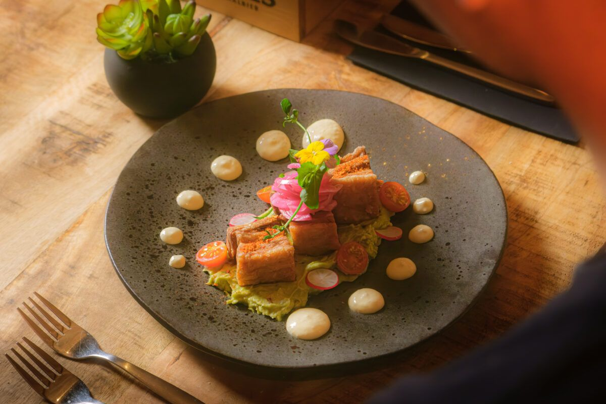
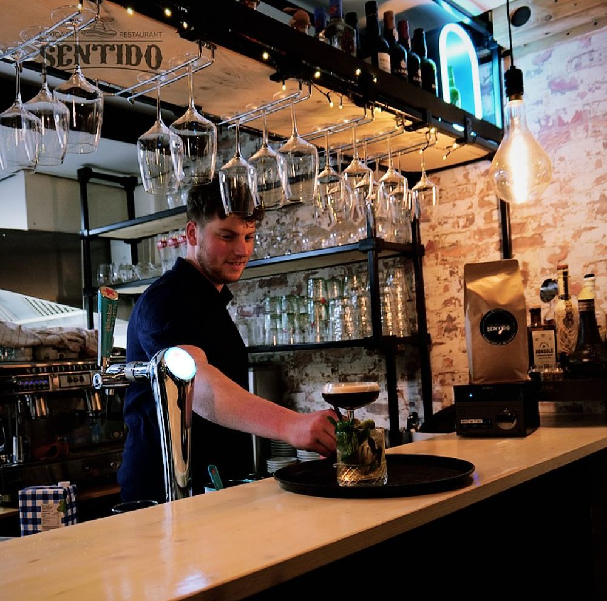
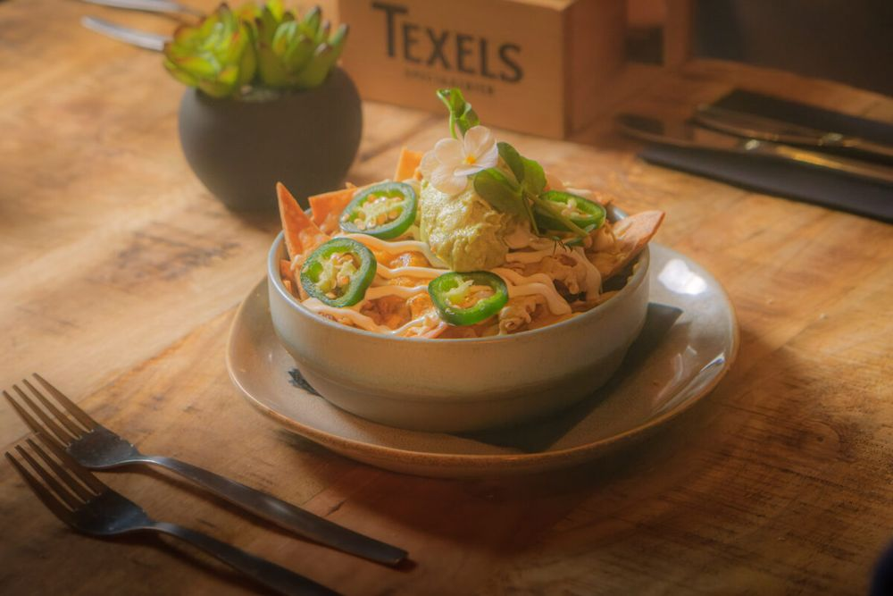
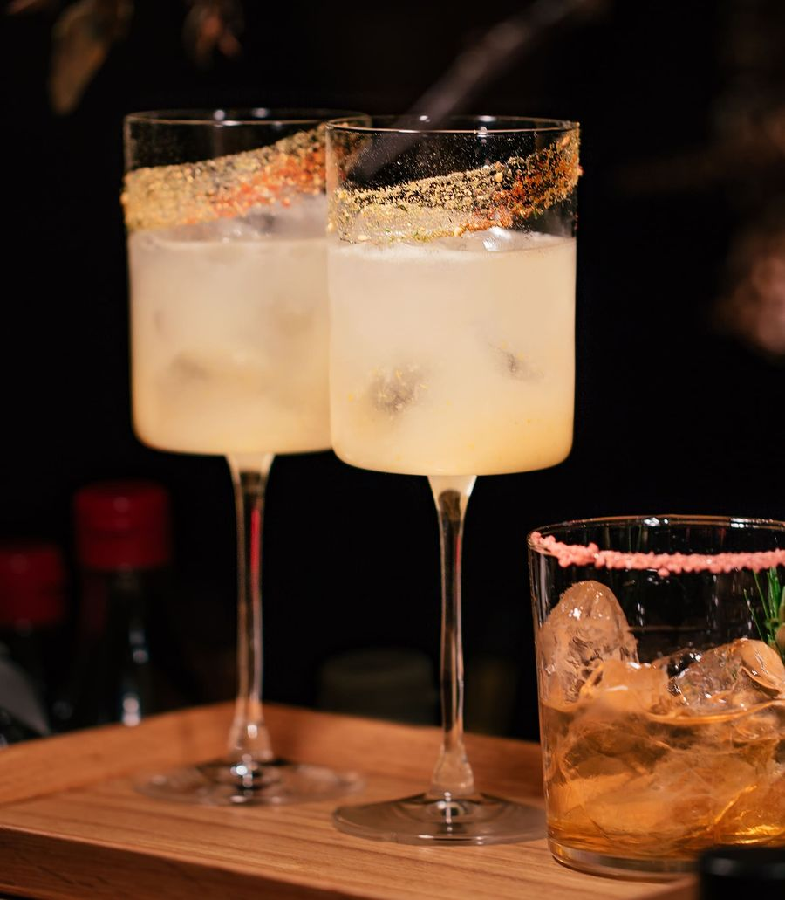
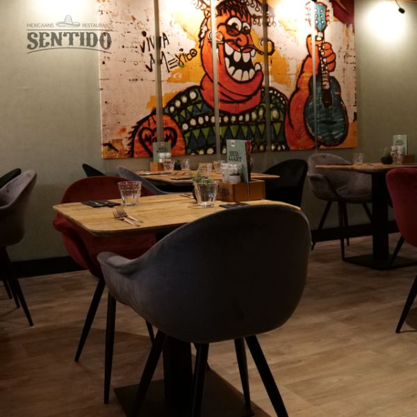
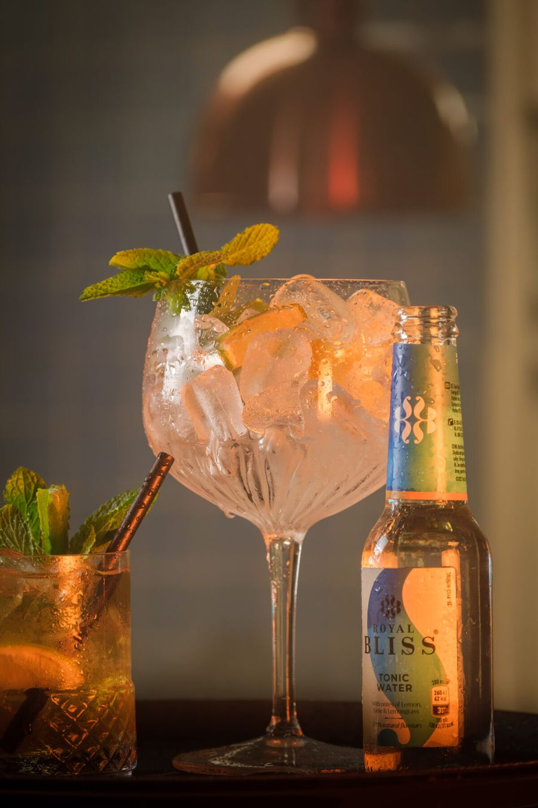
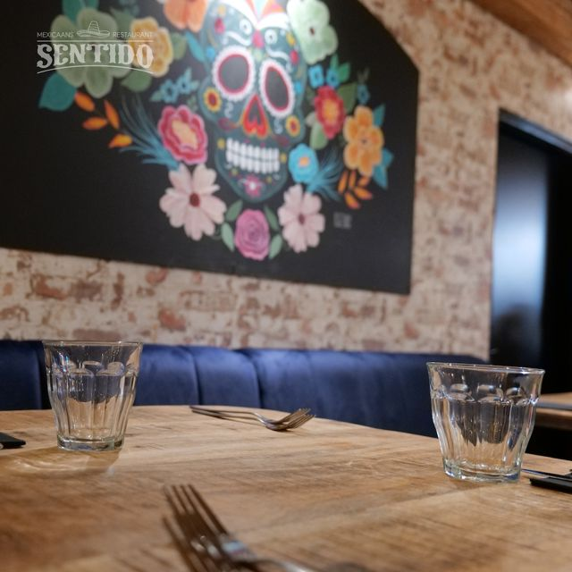
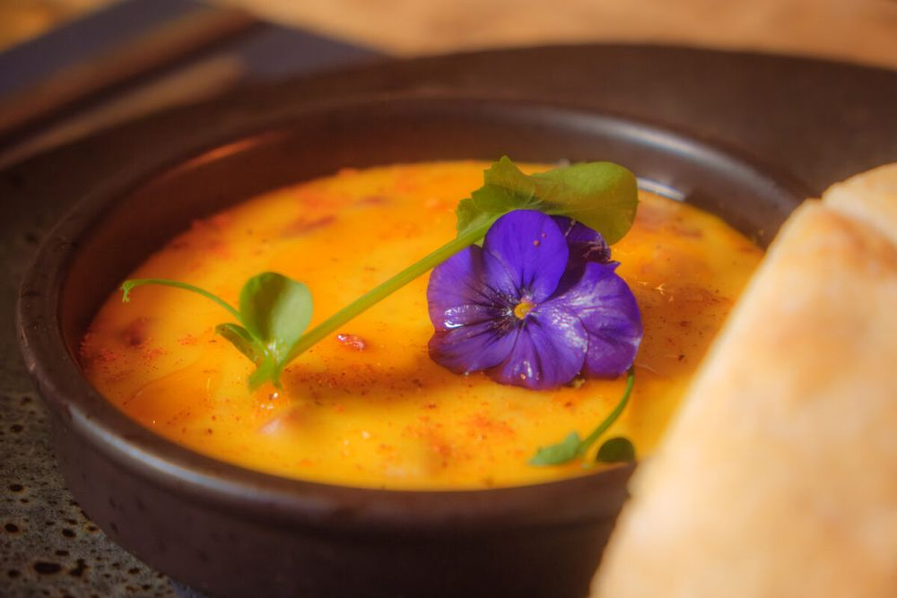

Een stukje Mexico in Bergen op Zoom
Verse, huisgemaakte Mexicaanse gerechten en kleurrijke cocktails. Kom samen proeven, beleven en genieten.
★★★★★4,7 op Google · 245 reviews

Eventjes in Mexico op vakantie
Mexico is een land met veel culinaire hoogtepunten. Bij Sentido halen we die smaken naar Bergen op Zoom. We werken met verse en huisgemaakte producten, zodat u als gast de beste Mexicaanse beleving krijgt.
SmaakVeel kruiden, spicy, maar toch ook fris.
OpmaakDe kleuren van Mexico in uw glas en op uw bord.
BelevingGastvrijheid, kennis en kunde voor een zorgeloze avond.
Een kijkje bij Sentido






Wat onze gasten zeggen
4,7
★★★★★
Google · 245 reviews | Tripadvisor 5,0★★★★★
"Het was in een woord GEWELDIG"
Els Videlervia Restaurantweek★★★★★
"Lekker eten. Vriendelijke bediening en gezellige sfeer"
Chris Koijen van beekvia Restaurantweek★★★★★
"We hebben share dining gedaan. Alles was een verrassing en heerlijk. De bediening was erg goed."
Liesbeth van Kesselvia RestaurantweekZin om Mexicaans te komen eten?
Reserveer een tafel
Reserveer online in een paar klikken of bel ons. Woensdag t/m zondag bent u welkom vanaf 17.00 uur.
Openingstijden
MaandagGesloten
DinsdagGesloten
Woensdag17.00 – 22.00
Donderdag17.00 – 22.00
Vrijdag17.00 – 22.00
Zaterdag17.00 – 22.00
Zondag17.00 – 22.00